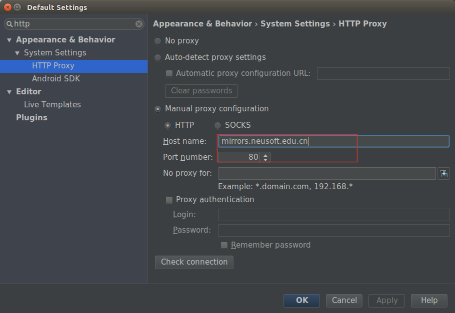

主要是一些繁琐但是有时候容易忘记的设置,因此记录于此.以下当提到 AS 时, 默认就是指 Android Studio .
Ubuntu 16.04 LTS x64
一个十分有用的快捷键 Ctrl+Shift+A , 打开一个弹框,输入模糊命令,比如说,输入 About,就可以快速查看 AS 的版本, 输入 HTTP Proxy 就可以快速打开代理设置,输入 AVD 就可以快速打开 AVD Manager 等.
依次File->Settings,进入设置界面,更改代码样式为Allman,如下:
/*默认的代码样式 K&R*/,
while (x == y) {
something();
somethingelse();
}
/*个人倾向的样式 Allman*/,
while (x == y)
{
something();
somethingelse();
}
更改方法为:
ile -> Settings -> (Project Settings) -> Code Style -> Java -> Wrapping and Brances,
然后按照下图设置:
Android 2.3 及其以上去除了单独版本的 SDK Manager 和 AVD Manager, 设置代理的方法是进入 AS 的设置选项中,进入 HTTP Proxy 栏,按下图设置:
这里选择的是大连东软的镜像: mirrors.neusoft.edu.cn:80.
如果你使用 socks 代理,在 Linux 下直接使用 127.0.0.1:1080 是行不通的, 你需要将 socks 流量转为 http 代理.
另外对于 SDK Update Sites 的设置可以通过修改 ~/.android/repositories.cfg 文件来实现,一个样例配置如下:
### User Sources for Android Repository #Thu Jun 01 14:15:58 CST 2017 disp00=Neusoft Mirror disp01=Neusoft Mirror disp02=Neusoft Mirror disp03=Neusoft Mirror disp04=Neusoft Mirror disp05=Neusoft Mirror disp06=Neusoft Mirror disp07=Neusoft Mirror disp08=Neusoft Mirror disp09=Neusoft Mirror count=10 enabled00=true enabled01=true enabled02=true enabled03=true enabled04=true enabled05=true enabled06=true enabled07=true enabled08=true enabled09=true src00=http\://mirrors.neusoft.edu.cn/android/repository/addon-6.xml src01=http\://mirrors.neusoft.edu.cn/android/repository/addon.xml src02=http\://mirrors.neusoft.edu.cn/android/repository/extras/intel/addon.xml src03=http\://mirrors.neusoft.edu.cn/android/repository/sys-img/android-tv/sys-img.xml src04=http\://mirrors.neusoft.edu.cn/android/repository/sys-img/android-wear/sys-img.xml src05=http\://mirrors.neusoft.edu.cn/android/repository/sys-img/android/sys-img.xml src06=http\://mirrors.neusoft.edu.cn/android/repository/sys-img/google_apis/sys-img.xml src07=http\://mirrors.neusoft.edu.cn/android/repository/sys-img/x86/addon-x86.xml src08=http\://mirrors.neusoft.edu.cn/android/repository/addons_list-2.xml src09=http\://mirrors.neusoft.edu.cn/android/repository/repository-10.xml
只需将Sdk/tools/lib/下的devices.xml覆盖错误文件/root/xxxx/Sdk/system-images/android-23/android-tv/armeabi-v7a/devices.xml即可.